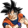
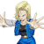
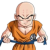
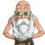

Goku
Activo ahora
Vegeta
Eres un insecto
Bereus
Ganar es lo primero

Whis
La ignorancia es aterradora
Androide 17
Sacrificarse por otros, es muy humano

Androide 18
Sino puedes vencer solo, hazlo en equipo

Krilin
No quiero morir nuevamente

Roshi
No te preocupes. Un tercio de cero sigue siendo cero
Piccolo
El que este verde no significa que no esté maduro
![Dibujo Donde aparece Goku y Vegeta, inclinados hacia al frente en 45 grados, lo que da la sensación de que están volando. Ambos son de tez blanca pelo azul (transformación nivel dios) Goku se encuentra con un kimono naranja y vegeta con un traje ceñido al cuerpo de color gris. Debajo de ellos se encuentra la frase Dragon Ball Super de combinaciones de colores entre rojo naranja y amarillo. Alrededor de ellos se encuentran 7 esferas las cuales se identifican por el numero de estrellas que cada una posee (del una a 7) De fondo se encuentra Bereus y Whis que son dos personajes de esta serie.](assets/img/DBS.png)